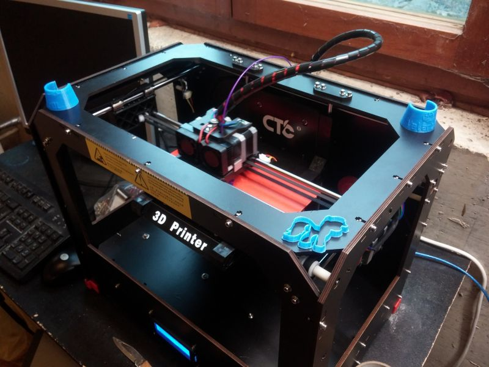

Unsere Projekte:
Freifunk Bodensee
Durch einen Teil von uns ist im Januar 2016 die Freifunk Bodensee iniziative entstanden. Wir haben mitlerweile ca 150 Knoten, dass bedeutet Router die mit unserer Freifunk firmware um den Bodensee herum stehen und funken.
Für ein Halbes Jahr finden wir dass schon ein sehr Gutes ergebnis und wir sind weiter am Wachsen.
Wir sichern uns wegen der Stöhrerhaftung und abmahnindustrie folgender maßen ab:
Wir haben derzeit 5 v-server auf denen die Daten weitergeleitet werden, entweder zurück ins Frifunk Netz oder über einen VPN server nach Schweden, wo keine Störerhaftung Existiert.
3D Druck
Test
Schwebedraht

Lulu